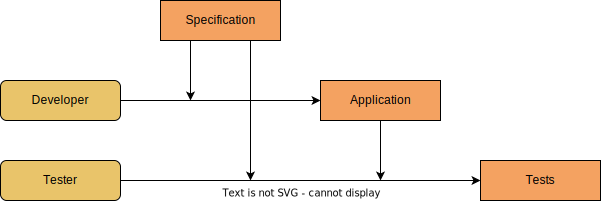
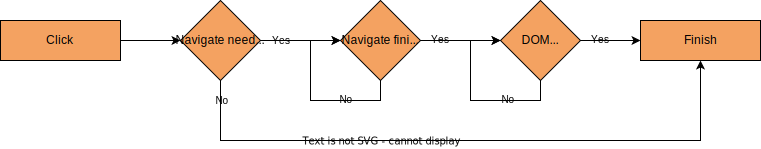
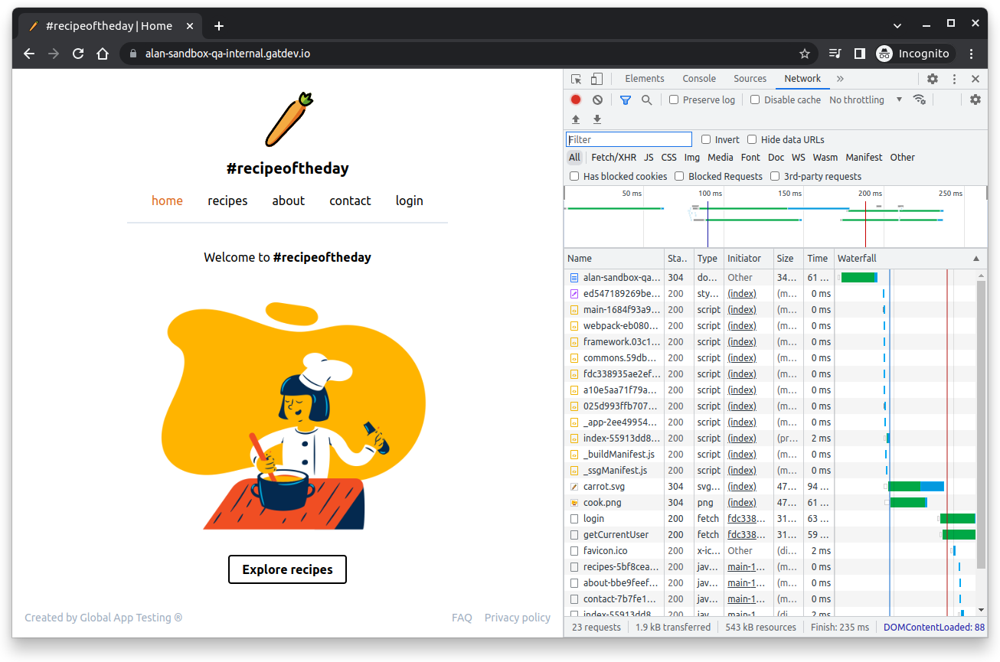
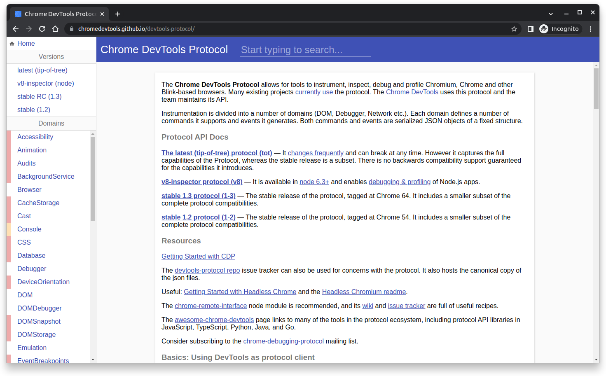
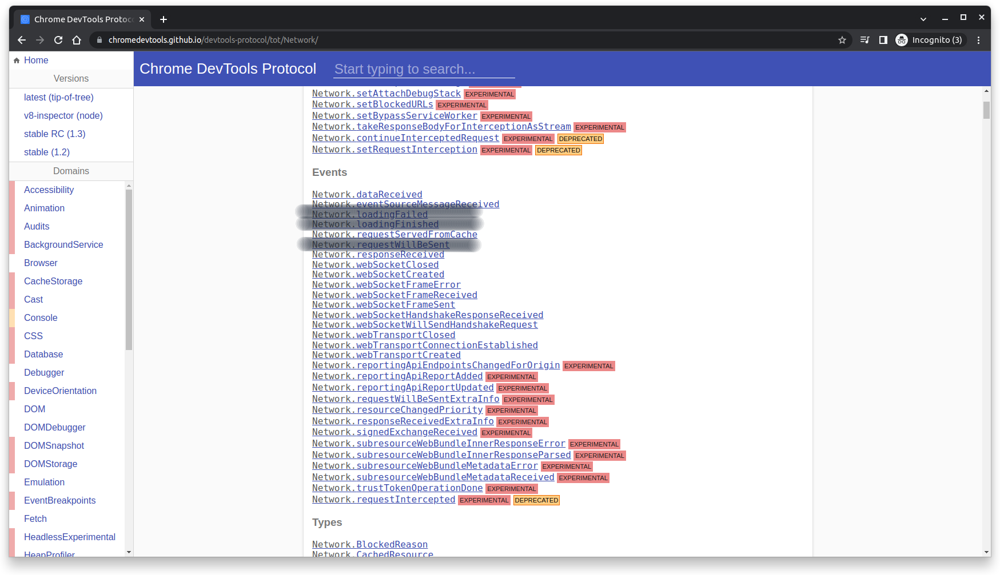
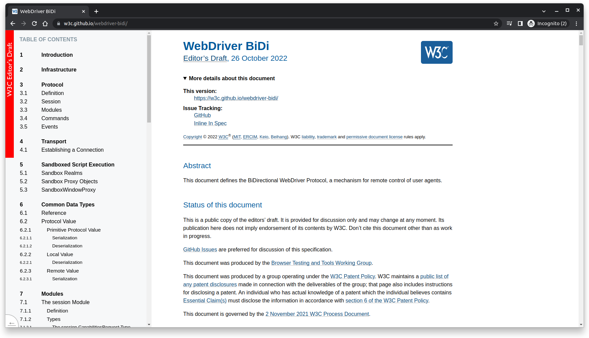
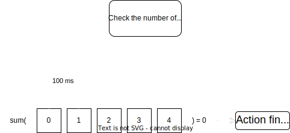
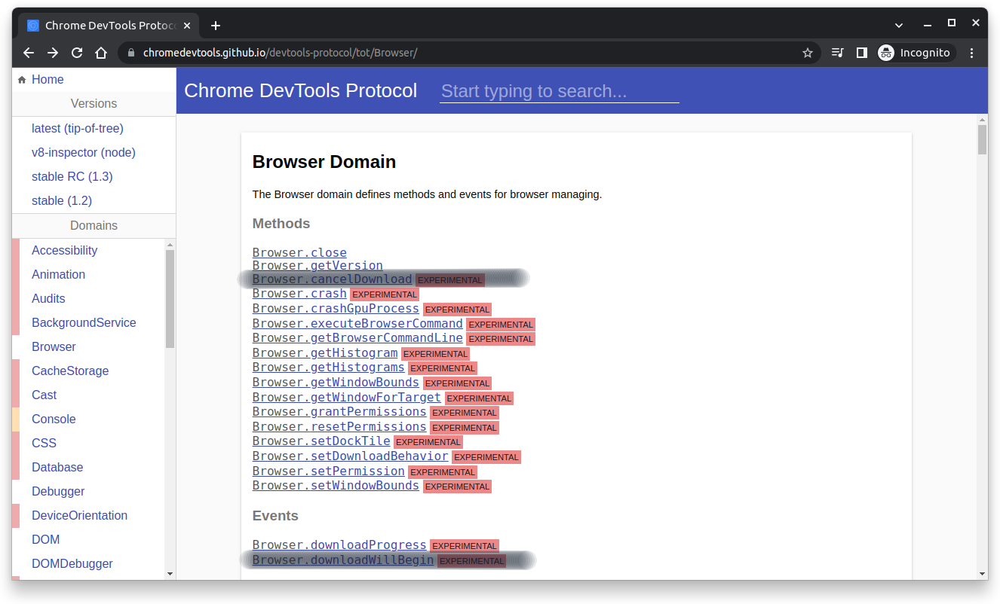

Testing unknown applications
with Selenium & WebDriver BiDirectional API
A story about testing web applications

Application works as intended?
# Arrange
def test_user_is_logged_in_after_filling_login_form(
driver: WebDriver, application_url: str
):
driver.get(application_url)
# Act
email = driver.find_element(By.XPATH, "//form/div[1]/label/input")
password = driver.find_element(By.XPATH, "//form/div[2]/label/input")
submit = driver.find_element(By.XPATH, "//form/button")
(
ActionChains(driver)
.send_keys_to_element(email, "alan@globalapptesting.com")
.send_keys_to_element(password, "Alan12345!")
.click(submit)
.perform()
)
try:
# Assert
WebDriverWait(driver, timeout=5).until(
expected_conditions.presence_of_element_located(
(By.LINK_TEXT, "account")
),
"The user hasn't been logged in.",
)
except TimeoutException as e:
pytest.fail(e.msg)
Before we move on...
AI folks, looks familiar?
What happens when you ask Selenium to click a button?

@pytest.fixture
def application() -> ThreadedFlaskServer:
app = Flask(__name__)
app.config.update({"TESTING": True})
@app.route("/")
def index():
return """
<html>
<head>
<title>Results page</title>
</head>
<body>
<a id="get-results">Get results</a>
<div id="results"></div>
<script type="text/javascript">
const button = document.getElementById("get-results");
const results = document.getElementById("results");
button.addEventListener("click", (event) => {
fetch(document.location.href + "results")
.then((response) => response.json())
.then((data) => results.innerText = data["data"]);
});
</script>
</body>
</html>
"""
@app.route("/results")
def results():
sleep(5)
return jsonify({
"data": "some very important data"
})
with ThreadedFlaskServer(app) as server:
yield server
def test_results_are_displayed_after_click_button(
application: ThreadedFlaskServer, driver: WebDriver
):
driver.get(application.url)
button = driver.find_element(By.ID, "get-results")
results = driver.find_element(By.ID, "results")
button.click()
assert results.text == "some very important data"
And that was just clicking...

What's happening under the hood?
Async requests!
Solution: track and await requests
Source of requests data
- Monkeypatching XMLHttpRequest and Fetch API
- Custom Chrome plugin
- Chrome DevTools Protocol


Selenium built-in Chrome DevTools Protocol support
from selenium import webdriver
from selenium.webdriver.chrome.service import Service
def geoLocationTest():
driver = webdriver.Chrome()
Map_coordinates = dict({
"latitude": 41.8781,
"longitude": -87.6298,
"accuracy": 100
})
driver.execute_cdp_cmd("Emulation.setGeolocationOverride", Map_coordinates)
driver.get("<your site url>")
Source: https://www.selenium.dev/documentation/webdriver/bidirectional/chrome_devtools/#emulate-geo-location
What about events? WebDriver BiDi API!

Selenium supports WebDriver BiDi with Trio
async def execute_and_await(
driver: WebDriver,
action: Callable[[], None],
timeout: float = 10.0, # [s]
num_checks: int = 10,
window_length: float = 1.0, # [s]
):
requests: dict[str, bool] = {}
async def request_tracker(
session: CdpSession,
task_status: "trio._core._run._TaskStatusIgnored" = trio.TASK_STATUS_IGNORED,
):
...
ready = trio.Event()
async def await_pending_requests(
task_status: "trio._core._run._TaskStatusIgnored" = trio.TASK_STATUS_IGNORED,
):
...
async with driver.bidi_connection() as bidi_session:
...

async def execute_and_await(
driver: WebDriver,
action: Callable[[], None],
timeout: float = 10.0, # [s]
num_checks: int = 10,
window_length: float = 1.0, # [s]
):
requests: dict[str, bool] = {}
async def request_tracker(
session: CdpSession,
task_status: "trio._core._run._TaskStatusIgnored" = trio.TASK_STATUS_IGNORED,
):
...
ready = trio.Event()
async def await_pending_requests(
task_status: "trio._core._run._TaskStatusIgnored" = trio.TASK_STATUS_IGNORED,
):
...
async with driver.bidi_connection() as bidi_session:
...
requests: dict[str, bool] = {}
async def request_tracker(
session: CdpSession,
task_status: "trio._core._run._TaskStatusIgnored" = trio.TASK_STATUS_IGNORED,
):
task_status.started()
async for event in session.listen(
RequestWillBeSent, LoadingFailed, LoadingFinished
):
match event:
case RequestWillBeSent(request_id=request_id, request=request):
LOG.debug("New request: %s", request)
requests[request_id] = True
case LoadingFailed(request_id=request_id) | LoadingFinished(
request_id=request_id
):
LOG.debug("Request finalized: %s", request_id)
requests[request_id] = False
async def execute_and_await(
driver: WebDriver,
action: Callable[[], None],
timeout: float = 10.0, # [s]
num_checks: int = 10,
window_length: float = 1.0, # [s]
):
requests: dict[str, bool] = {}
async def request_tracker(
session: CdpSession,
task_status: "trio._core._run._TaskStatusIgnored" = trio.TASK_STATUS_IGNORED,
):
...
ready = trio.Event()
async def await_pending_requests(
task_status: "trio._core._run._TaskStatusIgnored" = trio.TASK_STATUS_IGNORED,
):
...
async with driver.bidi_connection() as bidi_session:
...
ready = trio.Event()
async def await_pending_requests(
task_status: "trio._core._run._TaskStatusIgnored" = trio.TASK_STATUS_IGNORED,
):
checks = deque(range(num_checks), maxlen=num_checks)
check_interval = window_length // max(num_checks, 1)
task_status.started()
while True:
num_pending_requests = sum(requests.values())
checks.append(num_pending_requests)
status = sum(checks) == 0
if status:
ready.set()
break
await trio.sleep(check_interval)
async def execute_and_await(
driver: WebDriver,
action: Callable[[], None],
timeout: float = 10.0, # [s]
num_checks: int = 10,
window_length: float = 1.0, # [s]
):
requests: dict[str, bool] = {}
async def request_tracker(
session: CdpSession,
task_status: "trio._core._run._TaskStatusIgnored" = trio.TASK_STATUS_IGNORED,
):
...
ready = trio.Event()
async def await_pending_requests(
task_status: "trio._core._run._TaskStatusIgnored" = trio.TASK_STATUS_IGNORED,
):
...
async with driver.bidi_connection() as bidi_session:
...
async with driver.bidi_connection() as bidi_session:
session: CdpSession = bidi_session.session
await session.execute(network.enable())
async with trio.open_nursery() as nursery:
await nursery.start(request_tracker, session)
await nursery.start(await_pending_requests)
action()
with trio.move_on_after(timeout) as cancel_scope:
await ready.wait()
if cancel_scope.cancelled_caught:
LOG.debug("Timeout waiting for pending requests.")
nursery.cancel_scope.cancel()
def test_results_are_displayed_after_click_button(
application: ThreadedFlaskServer, driver: WebDriver
):
driver.get(application.url)
button = driver.find_element(By.ID, "get-results")
results = driver.find_element(By.ID, "results")
button.click()
assert results.text == "some very important data"
def test_results_are_displayed_after_click_button(
application: ThreadedFlaskServer, driver: WebDriver
):
driver.get(application.url)
button = driver.find_element(By.ID, "get-results")
results = driver.find_element(By.ID, "results")
trio.run(execute_and_await, driver, button.click)
assert results.text == "some very important data"
What else we can find in CDP?

Summary
Need more interaction with the browser in your tests or your application itself? Chrome DevTools Protocol and WebDriver BiDi API might be the solution.